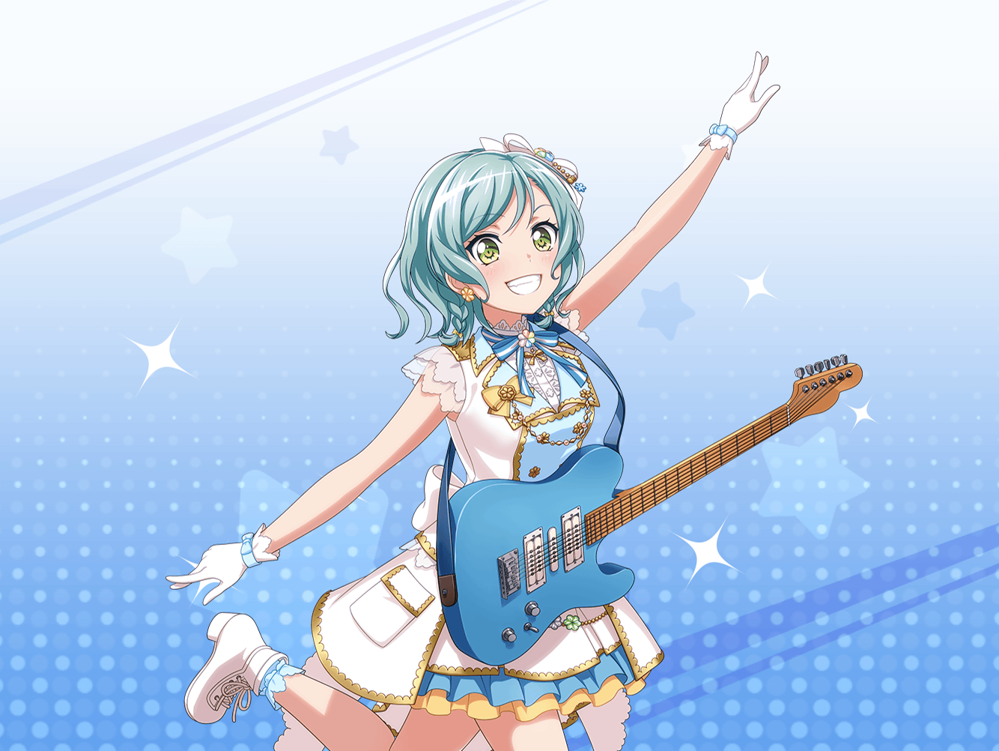

アイドル事務所
日菜
おっはよ〜！
イヴ
おはようございます、ヒナさん！
日菜
あれ、イヴちゃん１人？
サイズチェックってみんなで
するんじゃないんだ？
イヴ
はい！
アヤさん達は、別のお仕事があるみたいなので
日菜
そうなんだ〜、
新しい衣装楽しみだね！
日菜
あたし、デザイン見てすっごく、るんってきたもん！
イヴ
はい！ とってもステキな衣装になりそうで、
私もワクワクしています！
日菜
うーん、楽しみだな〜！
日菜
……そうだ、聞いてよイヴちゃん！
イヴ
なんですか、ヒナさん？
日菜
何かねー、Roseliaもステージ衣装を
新しくするみたいなんだ！
イヴ
そうなんですね！
一体どんな衣装なんでしょう？
日菜
それがさー、おねーちゃんに聞いても
全然教えてくれないんだよね！
日菜
だから、何かおねーちゃんが衣装を見せてくれるような
いいアイディアないかな！
イヴ
うーん、そうですね……
イヴ
あ、こういうのはどうでしょう！
日菜
お！ 何か思いついた？
イヴ
はい！ 日菜さんがまず先に、
自分が新しい衣装を着ている写真を
送ってみるのはどうですか？
イヴ
そうしたら、サヨさんもお返しに
自分の写真を送ってくれるかもしれません！
日菜
おー！ ナイスアイディアだよ、イヴちゃん！
日菜
……あ！ 準備できたみたいだね！
それじゃあ早速やってみるよ〜！
イヴ
はい、うまくいくといいですね！
１０分後
日菜
お疲れさま、イヴちゃん！
さっき送ってみたよ〜！
イヴ
おお！
サヨさんから、返信はありましたか？
日菜
ううん、まだ……あ！
おねーちゃんからメールだ！
イヴ
新衣装の写真、来ましたか？
日菜
あー、送ってはくれたけど……
イヴ
どうかしたんですか？
日菜
これだけしか送ってくれなかったよー……
イヴ
机の上に衣装が置いてあるだけ、
ですね……
日菜
もー！ おねーちゃんったら！
あたしはおねーちゃんが衣装を着てる写真が
欲しかったのに〜！
イヴ
残念でしたね……
日菜
せっかくあたしは衣装を着て、
かわいいポーズまでとって送ったのに〜！
イヴ
作戦失敗ですね……
日菜
ま、でも衣装を送ってくれたことは前進だよね！
イヴ
はい、きっともうひと押しですよ！
日菜
というわけで、よーし！
じゃあ次の作戦会議、始めるよ！
イヴ
い、今からですか！？
日菜
もっちろん！
一緒にご飯でも食べながら、
るん、ってくるアイディアをだそ〜！